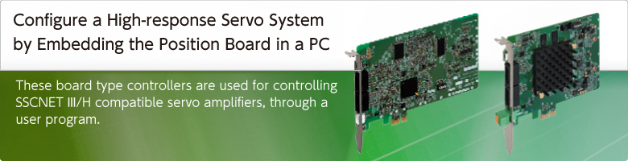

Embedded Type Servo System Controller


- Advantages
- Software Development Environment
- SSCNETIII/H
- Sensing Module
- LJ72MS15 SSCNETIII/H Head Module
- Positioning Control
- Jerk ratio acceleration/deceleration
- Vibration suppression command filter 1
- Other Axes Start Function
- Pass Position Interrupt Function
- Tightening & Press-fit Control
- Interface Mode Function
- Specifications
Features
- MR-MC341 achieves the control cycle of 0.22 ms (when controlling 32 axes) and the maximum control axes of 64 axes. MR-MC341
- MR-J5-B, the industry's most high-performance servo amplifier, can be
connected. (MR-MC341/MR-MC24□N only)
(MR-MC341/MR-MC24□N only) - Various existing assets such as boards and programs for PC can be effectively used.
- Event-driven programs, which use interrupts, can be created.
- Equipped with positioning functionality using point tables.
- An API library is available for more efficient software development.
- Real-time OS (INtime, RTX, etc.) is supported.
(Note): Contact your local Mitsubishi Electric office.
|
||||||

AdvantagesQ173SCCFMR-MCseries

Configuration

Software Development Environment MR-MCseries
Create a user program by adding the API library for positioning control to the project of Microsoft Visual Studio® which runs on a Windows® OS PC.

(Note): OS and the development environment are not included.
Utility
The utility for C Controller Interface Module/Position Board includes the following software that is necessary for application development.

Test tool
This tool supports parameter and point data settings for application development, operation check such as servo adjustment and error analysis. MR Configurator2 can be started from the test tool, so servo adjustment is easily performed.
Easy test operation check
Test operation is easily performed by using positioning test operation functions and parameter/point data setting functions.
These functions are useful for checking SSCNETIII/H wiring and motor movement.

Maintenance
You can confirm the sampled waveform of monitor data (32 items) and bit data (16 items) to check the sequence of user programs and startup timing.
Error analysis is carried out with ease by reading the alarm history stored on the non-volatile memory.

API library
The API library is the API functions for creating applications for C Controllers or on a personal computer.
Servo amplifier initialization, parameter change, startup in various operation modes, and monitor, etc., are available.
Device driver
The device driver is software required when a C Controller/a personal computer accesses to the Interface Module/Position Board from a user program via PCI Express®/Compact PCI® bus/PCI bus. You do not have to separately prepare a device driver.
High-speed Synchronous Network SSCNETIII/HQ173SCCFMR-MCseries
- Communications speed is increased to 150 Mbps full duplex (equivalent to 300 Mbps half duplex), three times faster than the conventional speed.
System response is dramatically improved. - Smooth control of a machine is possible using high-speed serial communications with a cycle time of 0.222 ms.
- Synchronous communications are achieved with SSCNETIII/H, offering technical advantages for machines that require deterministic control.
- Long distance wiring is possible up to 3200 m (10498.69 ft.) per system (maximum of 100 m (328.08 ft.) between stations x control axes up to 32 axes), suitable for large-scale systems.
- SSCNETIII/H compatible and SSCNETIII compatible servo amplifiers can be used together.
(The communications speed when SSCNETIII compatible products are used together in the same system: 150 Mbps full duplex)
(Note): SSCNET (Servo System Controller Network)

MR-MT2000 Series SSCNETIII/H Sensing ModuleQ173SCCFMR-MCseries
The sensing module MR-MT2000 series consists of one head module and four types of extension modules, the I/O module, pulse I/O module, analog I/O module, and encoder I/F module. The required extension modules can be selected according to your application.
Each I/O signal connected to the sensing module is synchronized with the control cycle, enabling a processing with little variation to achieve high speed and high accuracy of equipment.

More details of the g-code Control Add-on Library
LJ72MS15 SSCNETIII/H Head Module Q173SCCFMR-MCseries
The SSCNETIII/H Head module allows the controller to connect remotely with various modules (I/O, analog, high-speed counter, etc.) via SSCNETIII/H.
These remotely connected modules serve as the controller' s remote stations, transmitting the inputs/outputs.
This results in reduced wiring since the controller receives the I/O and analog I/O signals directly from the servo amplifier side.
(Note): MELSOFT GX Works2 is required to set the Head module.

(Note-1): Sensor I/O signals for inspection devices, etc., can be read/written via the Head module.
(Note-2): Outputs the hand open/close signals.
Positioning Control Q173SCCFMR-MCseries
Positioning operation is performed using the API library in a C language user program.
The operation is started with positioning data from the point data table and waits until an event occurs by interrupts.

Jerk ratio acceleration/deceleration (Vibration is suppressed with smooth speed changes) MR-MC341
Quick yet smooth acceleration

The total acceleration time can be reduced without losing smoothness because there are two different sections of acceleration: the section where acceleration rate changes smoothly, and the section where the maximum acceleration rate is maintained.
- Section A : Acceleration rate changes smoothly
- Section B : The maximum acceleration rate is maintained
- Section C : Acceleration rate changes smoothly
- Section D : Rated speed
Vibration suppression command filter 1 (Suppression of the low-frequency vibration) MR-MC341
Suppression of the low-frequency vibration which is unable to suppress with the servo amplifier

The filter function is used to suppress the vibration at the end of the workpiece and the machine frame vibration during positioning control. This filter is effective even for low-frequency vibration that cannot be suppressed by the machine resonance suppression filter or for when the frequency changes.
- V : Positioning velocity
- t : Time
- Line : Speed after filtered
- Dotted line : Speed before filtered
Other Axes Start Function Q173SCCFMR-MCseries
This function automatically starts other axes according to its startup condition and its operation pattern.
Cycle time of assembly machines, etc., is shortened with this automatic startup via controllers.

Pass Position Interrupt Function Q173SCCFMR-MCseries
During automatic operation, interrupts are outputted when axes pass the specified position.
After that, the corresponding interrupt process of the user program is started.
- High-speed event processing start on host side (OS) is possible based on the servo axis position
Operation example
- As the axes are moving to P2 from P1, the interrupt occurs.
- The vision camera takes photos of the workpiece according to the interrupts.
- The position data is read.
The vision camera takes photo responding to the interrupts.
Thus by taking photos periodically with interrupts, more accurate position data is available.

Tightening & Press-fit Control Q173SCCFMR-MCseries
The motor can be switched to torque control (tightening & press-fit mode) during positioning without stopping.
Since the current position is controlled even during the tightening & press-fit control, positioning operation based on the absolute position coordinates can be performed smoothly after switching back to positioning control.

Interface Mode Function Q173SCCFMR-MCseries
This standard feature realizes unique control based on a C-language user program using SSCNETIII/H
The interface mode function transmits the position commands received from a user program to servo amplifiers every operation cycle. This allows servo amplifier to be controlled using a user program.
Speed and torque controls are also available in this method.
So, an MR-J5-B (Note-1)/MR-J4-B can be controlled based on user programs created with your programming know-how of position/speed/torque commands while taking advantage of SSCNETIII/H servo system synchronous network performance.
(Note-1): Supported by MR-MC341/MR-MC24□N only.
- The C Controller Interface Module or Position Board controls the SSCNETIII/H processing. This allows the user-program side to focus on information processing, human machine interface, and Motion control.
- A personal computer with a real-time OS can perform fixed-cycle Motion control using interrupts at every operation cycle.
- Thanks to the position command buffers of up to 64 phases, even non-real-time OS (Windows® only) can perform at 0.22 ms (the fastest rate) cycle command operation; This enables further increase in accuracy in trajectory control.

Specifications
Control specifications
| Standard Mode | Interface Mode | |||||||
|---|---|---|---|---|---|---|---|---|
| MR-MC341 |
MR-MC240(N) MR-MC210 |
MR-MC220U3 MR-MC220U6 |
MR-MC241(N) MR-MC211 |
MR-MC341 |
MR-MC240(N) MR-MC210 |
MR-MC220U3 MR-MC220U6 |
MR-MC241(N) MR-MC211 |
|
| Number of control axes | UP to 64 | Up to 20 (MR-J5-B/ MR-J4-B) Up to 16 (MR-JE-B) |
Up to 20 (MR-J5-B/ MR-J4-B) Up to 16 (MR-JE-B) |
UP to 32 | UP to 64 | Up to 20 (MR-J5-B/ MR-J4-B) Up to 16 (MR-JE-B) |
Up to 20 (MR-J5-B/ MR-J4-B) Up to 16 (MR-JE-B) |
UP to 32 |
| Control cycle | 0.22ms/0.44ms/0.88ms (Select using parameters.) | |||||||
| Control mode | Position control, Tightening & press-fit control | Position control, Speed control, Torque control | ||||||
| JOG operation | Provided | − | ||||||
| Incremental feed | Provided | − | ||||||
| Automatic operation | Point table method, 1-axis control, Tightening & press-fit control |
− | ||||||
| Linear interpolation | Point table method, Up to 4 axes interpolation (Note-1) | − | ||||||
| Circular interpolation | Provided |
− | − | |||||
| Home position return | Dog method, Dog cradle method, Dog front end method, Data set method, Stopper method, Z-phase detection method, Limit switch combined method, Limit switch front end method, Scale home position signal detection method, Scale home position signal detection method 2 |
− | ||||||
| Home position reset (data set) | − | |||||||
| Electronic gear | Electronic gear numerator : 1 to 5242879 Electronic gear denominator : 1 to 589823 |
− | ||||||
| Speed units | Command unit/min, command unit/s, and r/min | Command unit/min, command unit/s, and r/min (the unit for speed of monitor output) |
||||||
| Acceleration/deceleration | Command speed limits: 1 to speed limit value Start speed limits: 1 to speed limit value Time constant limits: 0 to 20000 ms Separate setting of constants for deceleration and acceleration: Provided Separate setting of constants for each point: Provided Acceleration/deceleration method: Linear acceleration/deceleration, smoothing filter, start up speed, S-curve acceleration/deceleration (sine acceleration/deceleration), Jerk ratio acceleration/deceleration (Note-2), vibration suppression command filter 1 (Note-2) |
− | ||||||
| Stop function | Forced stop, Operation stop, Rapid stop | Forced stop | ||||||
| Command change | Position, Speed, Time constant | − | ||||||
| Application functions | Hardware stroke limit, Software stroke limit, Interlock, Rough match output, Torque limit, Backlash compensation, Position switch, Interference check (Note-1), Home position search limit, Gain switching, PI-PID switching, Absolute position detection system, Home position return request, Other axes start, Digital input/output, Servo amplifier general input/output, Pass position interrupt, Tandem operation, Mark detection |
Torque limit, Gain switching, PI-PID switching, Absolute position detection system, Digital input/output, Servo amplifier general input/output, Mark detection, Event detection |
||||||
| Auxiliary function | Monitor, High speed monitor, Interrupt, Host PC watchdog, Parameter backup, Test mode , Connect/disconnect, Sampling, Log, Alarm history, External forced stop disabled |
|||||||
(Note-1): Unavailable when the control cycle is 0.22 ms(MR-MC200 series).
(Note-2): Available only with MR-MC341.
Module specifications
Position Board specifications
| MR-MC341 (Note-1) | MR-MC240(N) | MR-MC241(N) | MR-MC220U3 | MR-MC220U6 | MR-MC 210 |
MR-MC 211 |
|||||
|---|---|---|---|---|---|---|---|---|---|---|---|
| Servo amplifier connection system | SSCNETIII/H | ||||||||||
| Servo amplifier | MR-J5-B(-RJ) (Note-3)/MR-J5W-B (Note-3) MR-J4-B(-RJ)/MR-J4W-B MR-JE-B |
MR-J4-B(-RJ)/MR-J4W-B MR-JE-B |
|||||||||
| Number of SSCNETIII/H lines | 2 lines | 1 line | 2 lines | 1 line | 1 line | 1 line | 2 lines | ||||
| Maximum distance between stations [m(ft.)] | SSCNETIII/H: 100 (328.08) | ||||||||||
| Peripheral I/F | USB | ||||||||||
| Forced stop input signal (EMI) (Note-2) |
Number of input points | 1 point | |||||||||
| Input method | Positive Common/Negative Common Shared Type (Photocoupler isolation) | ||||||||||
| Rated input voltage/current | 24 V DC/approx. 2.4 mA | ||||||||||
| Operating voltage range | 20.4 to 26.4 V DC (24 V DC +10%/-15%, ripple ratio 5% or less) | ||||||||||
| ON voltage/current | 17.5 V DC or more/2.0 mA or more | ||||||||||
| OFF voltage/current | 1.8 V DC or less/0.18 mA or less | ||||||||||
| Input resistance | Approx. 10kΩ | ||||||||||
| Response time | 1ms or less (OFF to ON, ON to OFF) | ||||||||||
| Recommended wire size | AWG28 to AWG20 (0.08 to 0.52 mm2) |
AWG28 to AWG22 (0.08 to 0.32 mm2) | |||||||||
| Number of Position Boards for one computer | 4 | ||||||||||
| Bus specification | PCI Express® 2.0 | PCI Express®1.1 × 1 | Compact PCI® bus | PCI bus | |||||||
| Size [mm(inch)] | Short sized version 105.8 (4.17) × 128.8 (5.07) |
Short sized version 111.2 (4.38) × 167.6 (6.60) |
3U size 128.7 (5.07) × 160.0 (6.30) |
6U size 262.05 (10.32) × 160.0 (6.30) |
Short sized version 106.7 (4.20) × 167.6 (6.60) |
||||||
| Operating ambient temperature | 0 to 45℃ (Secure an air flow) |
0 to 55℃ | |||||||||
| Cooling method | Air cooling (cooling fan required) |
Self cooling | |||||||||
| Power supply voltage | 3.3 V DC |
12 V DC |
3.3 V DC |
12 V DC |
3.3 V DC |
12 V DC |
5 V DC | ||||
| Current consumption [A] | 3.0 | 0.5 | 1.1 (0.3) (Note-4) |
- (0.2) (Note-4) |
1.5 (0.3) (Note-4) |
- (0.3) (Note-4) |
0.45 | 0.7 | |||
| Mass [kg] | 0.15 | 0.11 | 0.17 | 0.19 | 0.11 | ||||||
(Note-1): Be sure to induce an airflow in the PC case of the host controller that the MR-MC341 is installed. Refer to "MR-MC200/MR-MC300 Series Position Board User's Manual (Details)" for details.
(Note-2): For MR-MC200 series, crimping tools and connectors are needed for cable fabrication. Be sure to prepare ones separately.
(The forced stop input connector is included with MR-MC341 in the package.)
(Note-3): Supported by MR-MC341/MR-MC24□N only.
(Note-4): The value in () is the current consumption [A] of MR-MC24□N.
Position Board connector for forced stop input (cable-side)
| Manufacturer | Name | Model | Description |
|---|---|---|---|
| Molex, LLC | Housing | 51103-0300 | - |
| Terminal | 50351-8100 | Applicable wire size : AWG28 to AWG22 Two terminals are needed for one housing |
|
| Hand crimp tool | 57295-5000 | Applicable terminal: 50351 |